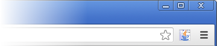

javadocのクラス一覧をフィルタリングするGoogle Chrome Extensionです。
フィルタリングにより目的のクラスへ素早くアクセスが可能です。
①[ツール] - [拡張機能]から拡張機能ページを表示します。
②ダウンロードしたcrxファイルを拡張機能ページにドラッグします。
③表示されるダイアログで[インストール]をクリックします。
Javadoc Filterをインストールすると右上にボタンが追加されます。

javadocのトップページを開いた状態で、ボタンをクリックするとJavaDoc Filterが起動します。
フィルター入力エリアが表示されたら、クラス名を入力します。
Chrome Extension版では、オフラン環境でも実行可能です。それ以外は、ブックマークレット版と違いはありません。
拡張機能のページ(chrome://extensions/)でJavaDoc Filterの「ファイルの URL へのアクセスを許可する」にチェックをして下さい。
JavaDoc FilterはMIT Licenseで公開しています。